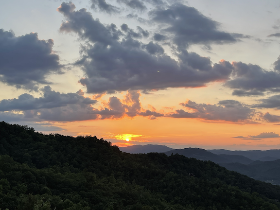
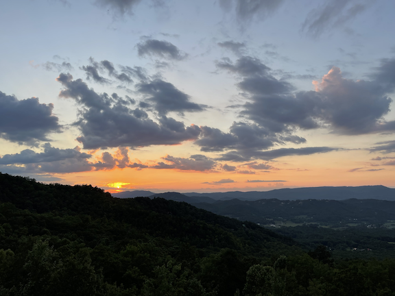
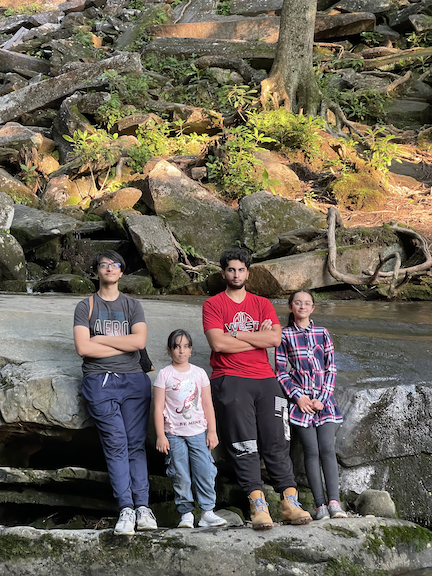
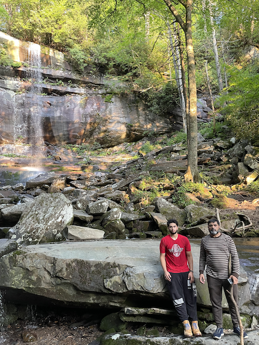
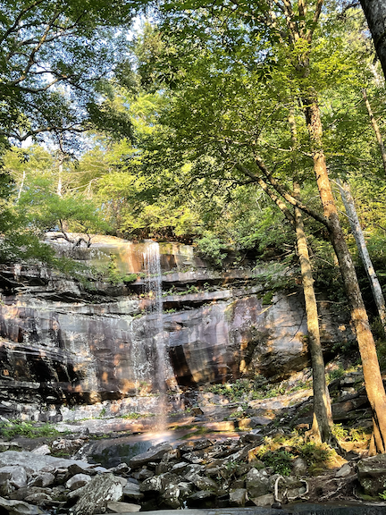

This trip stated on a sunday where 12 people including cousins, uncles, and aunts, packed to leave for the 12 hour trip. We left at 4:00 AM in two cars and hoped to reach by 4:00PM. We made to the resort at around 5:30. The Sights to the top of the mountain where our resort was, was filled with streams, many trees and narrow roads. Upon arrival, we saw the resort had a pool table, hot tub, BBQ gril, and a balcony where you could see above the clouds (almost). Being tired from traveling for 12 hours, I knocked out at around 8 and woke up at 6 :00 AM. The sunrise on the mountains has a scene no camera could capture.
 On day two I was feeling more adventurous and I decided to go on the most difficult hike I could find online, Rainbow falls. The only problem I had was having 6 other siblings and cousins that wanted to go with me. I ended up having to take them but not without giving over twenty disclamers and warnings about difficulty and danger. When we got to the hike, my dad came along to take of the kids under 12 and I had to take care of the rest. About a quater way there we had encountered multiple break downs. I felt the pain of parents having to deal with kids always asking "are we there yet" with the added pain of hiking 3 miles of unpaved terrain. On the way up, there were various streams with water so clear you the bottom perfectly, but even better than the sights was the taste. No bottled water could contain the minerals and coolness the streams retained. When we finally made it to the top, it was a sight to see. Even though the rocks were quite slippery, it was worth the risk to get the pictures of a lifetime.
  